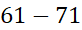
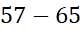

Dasar, S. (2021). Pengembangan modul bagun datar berbasis paikem untuk meningkatan pemahaman matematis siswa sekolah dasar. Jurnal Ilmiah PGSD, 5(84), 
Fatchurohman, F. (2016). Pemahaman Konsep Matematika Siswa Dalam Menyelesaikan Masalah Bangun Datar. JIPM (Jurnal Ilmiah Pendidikan Matematika), 4(2), 127. https://doi.org/10.25273/jipm.v4i2.847
Manu, S. F., Uskono, I. V., Lakapu, M., Gawa, M. G., Dosinaeng, W. B., & Bria, K. (2021). Analisis Kesalahan Siswa Sekolah Dasar dalam Menyelesaikan Soal Belah Ketupat. ASIMTOT: Jurnal Kependidikan Matematika, 3(1), .
Ilma, Ratu. (2011). Pembelajaran Materi Bangun Datar melalui Cerita menggunakan Pendekatan Pendidikan Matematika Realistik Indonesia (PMRI) Di Sekolah Dasar. Jurnal Pendidikan dan Pembelajaran. 18(2).
Ruhimat, Toto. (2019) Pengembangan Pembelajaran Siswa Aktif (Active Learning). Jurnal UPI
Sari, W. S. (2013). Analisis Upaya Guru Dalam Mengatasi Kesulitan Belajar Matematika Pada Luas Dan Keliling Bangun Datar Siswa Kelas Iv Sd Negeri Soko 2. Journal of Chemical Information and Modeling, 53(9), .
Studi, P., Guru, P., Dasar, S., Tinggi, S., Dan, K., & Pendidikan, I. (n.d.). Bangun datar. April 2017.
Turmudi,
(2008). Landasan Filsafat dan Teori Pembelajaran Matematika (Berparadigma
Eksploratif dan Investigatif). Jakarta: Leuser Cipta Pustaka